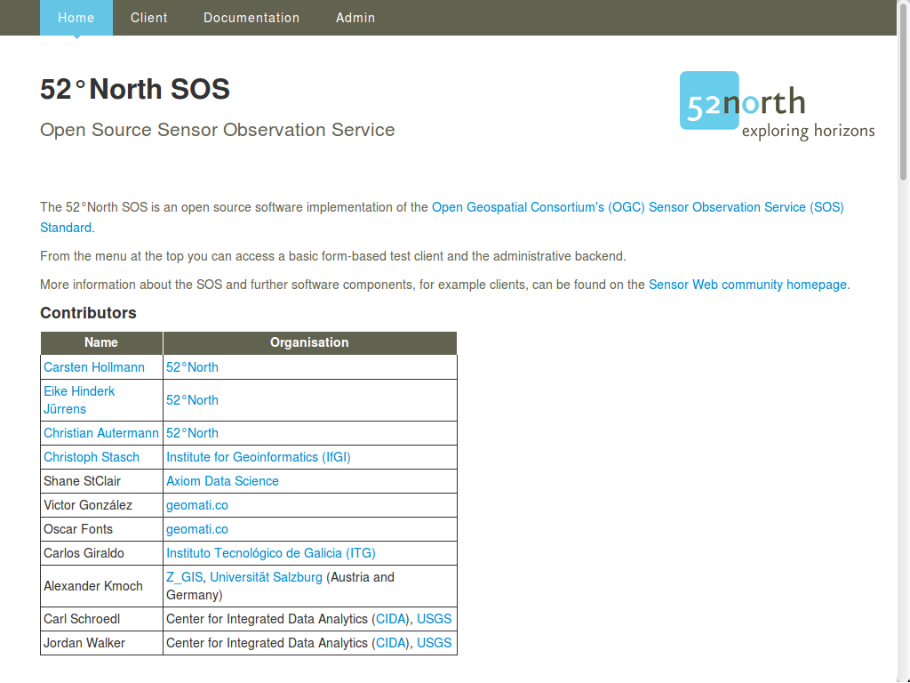

Inicio Rápido 52 North SOS¶
52°North SOS es un servicio Web, que permite acceso interoperable a datos de observación (espaciales) y los metadatos asociados.
Esta Guía de Inicio Rápido describe cómo:
Consulta las capacidades del 52°North SOS para determinar qué consultas apoya y que los datos ofrece.
Consulta los detalles sobre una observación de SOS.
Utilice la herramienta ligera de visualización «Helgoland» entregado con SOS para explorar los datos disponibles.
Explorar el endpoint REST de API para desarrolladores de cliente.
Para empezar¶
Seleccione para iniciar el 52°North SOS.
- Se abrirá la página en firefox de recepción de clientes del 52°North SOS en
http://localhost:8080/52nSOS/ (ver Fig. 1).
Fig. 1: página de bienvenida de cliente de 52°North SOS-
{kind=link}
Haga click en Client de la Barra superior del menú. Una vez queue conozca las capacidades de un servidor SOS, (ver Fig. 2) puede crear consultas apropiadas. esto se hace más fácil seleccionando consultas de muestra. Usando la información de las capacidades del documento, puede ajustar las consultas de ejemplo disponibles.

Fig. 2: Cliente de 52°North SOS - cliente de prueba con petición GetCapabilities.
Para obtener los datos de observación disponibles dentro del intervalo de tiempo desde 2018-07-02T23:45:00.000+00:00 a 2018-07-04T23:45:00.000+00:00 para cada serie de tiempo, inserte la siguiente solicitud después de seleccionar en el campo de solicitud cliente de prueba :
<?xml version="1.0" encoding="UTF-8"?>
<env:Envelope
xmlns:env="http://www.w3.org/2003/05/soap-envelope"
xmlns:xsi="http://www.w3.org/2001/XMLSchema-instance"
xsi:schemaLocation="http://www.w3.org/2003/05/soap-envelope http://www.w3.org/2003/05/soap-envelope/soap-envelope.xsd">
<env:Body>
<sos:GetObservation service="SOS" version="2.0.0"
xmlns:sos="http://www.opengis.net/sos/2.0"
xmlns:fes="http://www.opengis.net/fes/2.0"
xmlns:gml="http://www.opengis.net/gml/3.2"
xmlns:swe="http://www.opengis.net/swe/2.0"
xmlns:xlink="http://www.w3.org/1999/xlink"
xmlns:swes="http://www.opengis.net/swes/2.0"
xsi:schemaLocation="http://www.opengis.net/sos/2.0 http://schemas.opengis.net/sos/2.0/sos.xsd">
<sos:temporalFilter>
<fes:During>
<fes:ValueReference>phenomenonTime</fes:ValueReference>
<gml:TimePeriod gml:id="tp_1">
<gml:beginPosition>2018-07-02T23:45:00.000+00:00</gml:beginPosition>
<gml:endPosition>2018-07-04T23:45:00.000+00:00</gml:endPosition>
</gml:TimePeriod>
</fes:During>
</sos:temporalFilter>
</sos:GetObservation>
</env:Body>
</env:Envelope>
Listado 1: petición de observaciones.
Cosas para probar¶
Pruebe algunas de las otras consultas de ejemplo de la lista desplegable.
Intente ajustar algunas de estas consultas para obtener información diferente
Pruebe el SOS administrator con el nombre de usuario
usery la contraseñauser.Pruebe Helgoland - el Visor de Cliente (véase Fig. 3).
Pruebe otros datos de la muestra realizando los siguientes pasos:
Abra el administrador SOS página de mantenimiento de la base de datos.
Vaciar la base de datos utilizando el botón de «Fuente de Datos Clara» (esto borrará los datos de ejemplo. Puede reiniciar OSGeoLive para recuperar los datos.).
Insertar datos de la muestra generada de forma dinámica haciendo click en el botón «Insertar datos de muestra». Le informamos de que esta operación puede tardar algunos minutos.
Abra Helgoland de nuevo y explore la muestra de datos generada.

Fig. 3: Cliente de 52°North SOS- Cliente JavaScript con daros de series de tiempo.
Pruebe el Sensor Web REST API (Véase Listado 2):
[
{
id: "services",
label: "Service Provider",
description: "A service provider offers timeseries data."
},
{
id: "stations",
label: "Station",
description: "A station is the place where measurement takes place."
},
{
id: "timeseries",
label: "Timeseries",
description: "Represents a sequence of data values measured over time."
},
{
id: "categories",
label: "Category",
description: "A category group available timeseries."
},
{
id: "offerings",
label: "Offering",
description: "An organizing unit to filter resources."
},
{
id: "features",
label: "Feature",
description: "An organizing unit to filter resources."
},
{
id: "procedures",
label: "Procedure",
description: "An organizing unit to filter resources."
},
{
id: "phenomena",
label: "Phenomenon",
description: "An organizing unit to filter resources."
},
{
id: "platforms",
label: "Platforms",
description: "A sensor platform where observations are made."
},
{
id: "geometries",
label: "Geometries",
description: "A geometry where observations are made or that was observed."
}
]
Listado 2: Salida del endopoint de API REST de Sensor Web.
¿Qué sigue?¶
Para aprender más sobre 52°North SOS y/o la Comunidad de Sensor Web 52°North, puntos de partida potenciales son:
52°North overview SOS
Sensor Web 52°North, lista de correos: sensorweb@52north.org
52°North comunidad Sensor Web
52°North Cliente SOS
52°North sitio Web SOS
El desarrollo de esta versión de 52 ° North SOS fue apoyado por diferentes proyectos, organizaciones y personas. Más detalles pueden encontrarse en 52°North SOS client.
Nos gustaría agradecer a la Agencia Ambielntal Interregional Belga (IRCEL - CELINE) por porporcionar los datos de demostración utilizados en esta instalación de SOS. Estos datos de demostración se publican bajo una licencia CC BY 3.0.
Cuando SOS no está disponible, por favor, revise si el motor tomcat servlet se está ejecutando. Utilice los sigueintes comandos:
user@osgeolive:~$ sudo systemctl status tomcat8.service | grep Active
Active: active (running) since Wed 2017-06-21 12:00:42 UTC; 42min ago <-- Tomcat is running
[...]
Active: inactive (dead) <-- Tomcat not runing, so please start:
user@osgeolive:~$ sudo systemctl start tomcat8.service
Active: active (running) since Wed 2017-06-21 12:52:42 UTC; 3s ago <-- Tomcat is running, now
Listado 3: Estatus e Inicio de Tomcat (contraseña para sudo: user).